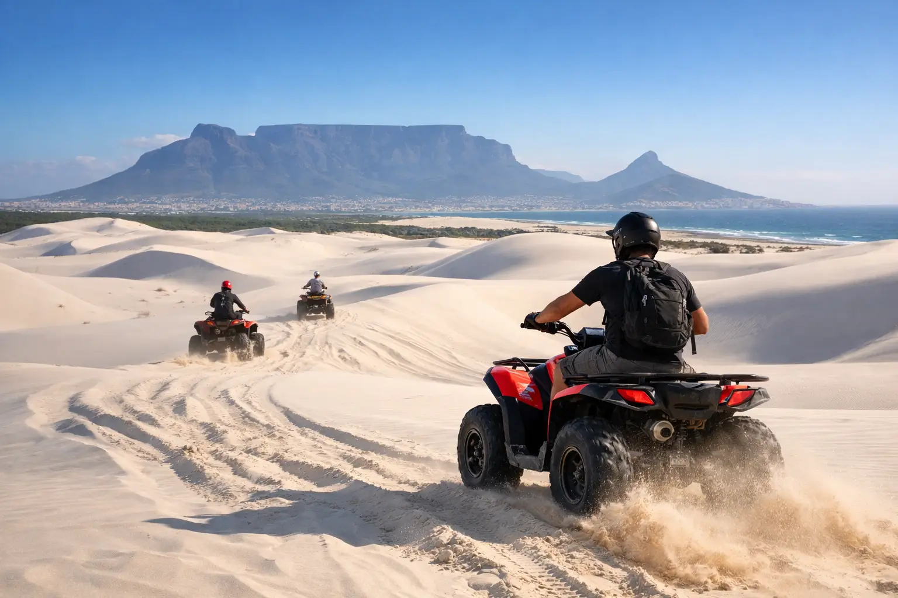

Atlantis Sand Dunes Quad Biking Near Cape Town

The white sand rises so suddenly from the West Coast landscape that first-time visitors often stop at the edge just to take it in. Atlantis sand dunes quad biking is one of Cape Town’s most energetic outdoor experiences: a guided ride across a wide, shifting dune field where every slope, turn, and sand track feels different from the last.
It is not a sightseeing drive where you sit back and watch the scenery pass. You are in control of a quad bike, following an experienced guide through designated areas of the dunes. That makes it a standout choice for couples, friend groups, and travelers who want a memorable break from city sightseeing, wine tasting, and coastal roads.
Where the Atlantis Dunes are and how to get there
The Atlantis Dunes are north of Cape Town, close to the town of Atlantis and within the broader Witzands Aquifer Nature Reserve area. From central Cape Town, the journey generally takes around 45 to 60 minutes, depending on traffic and your hotel location. Morning departures are usually the easiest option, especially in warmer months when the sand can become very hot by midday.
The route itself is part of the experience. As Cape Town’s city streets give way to the West Coast, the landscape becomes flatter, drier, and more open. Then the dunes appear - bright, soft-looking, and far larger than most visitors expect.
A guided transfer is often the most practical choice. It removes the need to navigate an unfamiliar route, arrange parking, or worry about returning to your hotel after a sandy, active morning. For private groups, a driver and vehicle can also make it easier to coordinate different riding levels, luggage, children, or onward plans such as lunch on the coast.
What an Atlantis sand dunes quad biking experience feels like
After check-in, you will normally receive a safety briefing and instructions on operating the quad bike. Guides explain throttle control, braking, following distance, hand signals, and the route rules before the ride begins. Even if you have never ridden before, most operators design introductory experiences for beginners, provided you meet their age and safety requirements.
The first few minutes are usually about getting comfortable. The sand changes how the vehicle handles, so smooth throttle control matters more than speed. Once everyone has found their rhythm, the guide leads the group through rolling tracks, gentle climbs, wider open sections, and selected slopes with views over the dune field.
Expect wind, sun, sand on your shoes, and plenty of photo stops. The white dunes create striking contrast against a clear blue sky, especially in the morning or later afternoon. The terrain is exciting, but it should never feel like a free-for-all. Responsible rides stay within approved areas and follow the guide’s pace to protect both guests and the sensitive dune environment.
Choose the right ride for your group
Not all quad biking trips are identical. Duration, route intensity, quad size, passenger rules, and age limits can differ between operators. Before confirming, make sure the experience suits the people traveling with you.
A shorter guided ride can be a good fit for first-time riders, families with older children, or travelers fitting the dunes between other Cape Town activities. A longer experience may appeal to confident riders who want more time on the sand and a less rushed outing. If your group includes a mix of beginners and experienced riders, tell the booking team in advance. A well-managed operator can advise on the most appropriate format rather than placing everyone on a ride that is too technical or too slow for the group.
Private departures are worth considering for birthdays, bachelor or bachelorette groups, corporate outings, and multigenerational families. They allow more control over pickup times and can make the briefing and pace feel more personal. For larger groups, transport planning is particularly important. Organizing a coach or several vehicles, a meeting point, and a realistic return schedule prevents the adventure from becoming a logistical headache.
Flexi Tours can assist travelers who want to combine reliable Cape Town transport with a West Coast dune activity, particularly when hotel pickup, group coordination, or a customized private itinerary is needed.
What to wear and bring
Dress for an outdoor activity, not for a restaurant or a city tour. Closed-toe shoes are strongly recommended because of the hot sand, footrests, and general comfort on the quad. Choose comfortable clothes that can get dusty, and bring a light layer if you are riding early in the day or during a windy season.
Sunglasses help with glare and blowing sand, while sunscreen is essential even when the weather feels cool. A small bottle of water is useful, although your transport or tour arrangement may include refreshments. Secure your phone before riding. A zipped pocket, small crossbody bag, or a guide-approved storage option is better than holding it loosely while moving over uneven sand.
Avoid bringing valuables that do not need to come along. Fine sand gets into everything, and there is no benefit in carrying extra items onto a quad bike. If you plan to take photos, ask during the briefing when and where it is safe to stop. Trying to film while riding is distracting and can put both you and other guests at risk.
Safety is part of the fun
Quad biking looks easy on social media, but the dunes are real off-road terrain. The best rides are exciting because they are guided, paced, and controlled. Listen carefully to the briefing, wear the provided safety equipment correctly, and keep the distance your guide requests. Sudden braking or cutting across another rider’s path can cause avoidable problems in loose sand.
Alcohol and quad biking do not mix. Save the wine tasting or celebratory drinks for after the ride. You should also tell the operator about any mobility limitations, recent injuries, pregnancy, or concerns about riding. The right answer may be a gentler activity, a passenger option where available, or simply choosing another day. It depends on the operator’s rules and your individual circumstances.
Weather can also shape the experience. A bright day is excellent for photos, but high winds can make the dunes less comfortable and reduce visibility. In rare cases, conditions or reserve access requirements may affect operations. Keep your schedule flexible enough that a weather adjustment does not disrupt the rest of your Cape Town plans.
Build the dunes into a practical Cape Town day
For many visitors, the dunes work best as a half-day adventure. An early hotel pickup, transport north, briefing, guided ride, and return to Cape Town can leave the afternoon open for the V&A Waterfront, a city tour, Table Mountain weather permitting, or a relaxed lunch.
If you are traveling with friends, pairing the ride with a West Coast meal can make for a particularly easy day out. Families may prefer a morning departure followed by a less active afternoon, since the sun and adrenaline can be tiring for younger travelers. Visitors with a packed itinerary should avoid booking the dunes immediately before a long-haul flight or a tightly timed event. Sand, traffic, and weather are all manageable, but they deserve a little breathing room.
Do you need experience to ride a quad bike?
Usually, no. Many guided dune rides welcome beginners and include basic operating instructions. You still need to follow the operator’s eligibility requirements, safety rules, and guide direction throughout the activity.
Can children take part?
This depends on the operator’s age, height, and passenger policies. Some experiences allow children as passengers under specific conditions, while others require riders to meet a minimum age. Confirm these details before booking rather than assuming a family-friendly activity means every child can ride.
Is a morning or afternoon ride better?
Morning rides are often cooler and easier to fit into a full sightseeing day. Afternoon light can be beautiful for photographs, but temperatures and wind may be stronger. The best choice depends on the season, your hotel location, and what else you want to do that day.
Book the dunes with enough time to enjoy the briefing, settle into the bike, and stop for the view. The best part is not racing through the sand - it is leaving Cape Town for a few hours and coming back with a story that feels entirely different from the usual postcard itinerary.
Planning this trip?
Tell us your dates and we will put a day together for you.